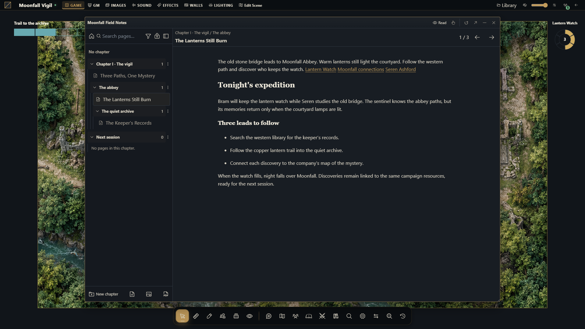

Journals, quests and roll tables
Keep campaign knowledge, share handouts and track objectives without exposing GM notes.


Choose a document
Journals include structured notes, quests, quest boards and weighted roll tables. Use a journal for reference material, a quest for objectives and rewards, a board to organize quests and a roll table for weighted results. Image/PDF attachments let you keep related handouts with the document.
Prepare and share a journal
Create a document in the journal directory and choose its type.
Organize its pages or content sections and add authorized attachments.
Put private preparation in GM sections rather than relying on an obscure page title.
Set document and page access for the intended people. Read access and editing ownership are distinct.
Use the available presentation/handout controls to show the intended material.
Check the result as a player; a shared document does not imply every private section becomes public.
Organize independent chapters and pages
Choose New chapter to create an empty chapter, optionally under another chapter. A chapter can hold pages and subchapters; each page belongs to one chapter or none. Use Move to chapter or No chapter on a page. Deleting a chapter keeps its pages ungrouped and moves its direct subchapters to its parent. Page deletion is a separate action. Protected pages can prevent removal of a required chapter.
While editing a page you own, click its header name or focus it and press Enter/Space. Enter or leaving the field confirms its title; Escape cancels, and an empty name keeps the previous title. Content and links remain intact. Collapse pages makes room on narrow screens; Show pages restores the index.
The diary supports 128 chapters, eight chapter levels and 64 pages. Older category groupings become stable chapters. Hidden-only branches remain filtered; readable page paths and genuinely empty chapters remain visible. Existing history and campaign copies retain the hierarchy.
Insert references with @
In editable rich text, type @ at the start of a paragraph or after a space. Search the authorized campaign catalog, choose a type and select Add link. Confirming replaces the typed marker; cancelling keeps it as ordinary text. An @ inside an email does not open the picker, and / still opens the block menu.
The same 37-type catalog used by mind maps includes sheets, journals/pages, quests, items, scenes, clocks, discovered clues and other native resources. Opening rechecks target access; a shared journal does not grant access to its links. Unavailable targets reveal no private name or identity. Source-bound opaque placeholders preserve existing hidden references during otherwise authorized edits; guessed private targets cannot be inserted. This works in the table and campaign manager. See the journal reference for permissions and transfers.
Track a quest
Enter the player-facing description, status, objectives, rewards and assigned characters. Keep GM notes separate. Decide which objectives and rewards players should see. Link the quest to a board when you want a grouped view; hidden quest status, explicit denial and actor access still affect what each player sees.
For an interactive quest giver, bind a fixed campaign quest in the Smart Object's Quest giver or Quest completion model. The GM-authored Set quest status action changes that quest through the journal service. A player interacting with the object receives only that configured action, not general permission to edit quests. Open journal can present a journal, quest or board to selected recipients, but does not grant read access: configure document permissions first. A behavior playtest reports the planned changes and deliveries without saving quest state or opening player windows.
Draw from a weighted table
Add active entries with appropriate weights and choose whether results are replaced after drawing. Check the result audience before a draw. A GM-only result is filtered for players even when they can access the table. If no eligible weight remains in a table without replacement, reset or adjust its entries before drawing again.
Limits and troubleshooting
Quests support up to 64 objectives and 64 rewards, with up to 32 assigned characters. Roll tables support up to 256 entries. If a document appears on a board but cannot be edited, inspect its own access. If an attachment fails, check the file's campaign and permissions rather than publishing its storage URL. Reopen a document after a revision conflict and reapply the intended change to the current version.